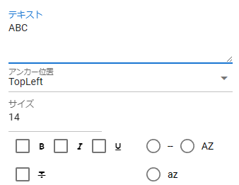
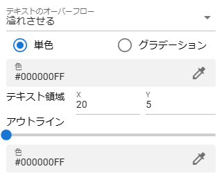
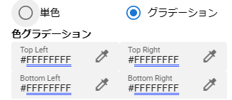

9.8. Text / Text3D
 |
 |
From ver 2.4.0, text as 3D is also supported. 3D/2D text to be displayed on the WebGL screen is set.
The property contents are the same in both cases.
- Text:
Enter the string to display.
- Anchor position:
Specifies the reference corner for movement and character string drawing.
- Font size:
Specifies the font size of the string.
- Decoration:
Specifies string decoration.
- Check box on the left
Bold, italic, underline, strikeout
- Right radio box
Nothing, Capitalization, Lowercase
※こちらはいずれか1つしか選択できません。
- Text overflow:
Sets the behavior when characters overflow from the text area. Select one of the following
Overflow
Ellipsis
Masking
Truncate
Scroll rectangle
Page
Linked
- Color:
Change the color of the string. Toggle between
single colororgradient.- Color
All text will be in this color.
- gradient
Set the entire text, corner by corner.
TopLeft
Top left
TopRight
Top right
BottomLeft
Bottom left
BottomRight
Bottom right
- Text area:
Sets the range within which the text will be drawn. This is also used as the hit detection for the
collision detectionphysics effect.- Outline:
Move the slider to set the outline width.
- Outline (Color):
Sets the outline color.